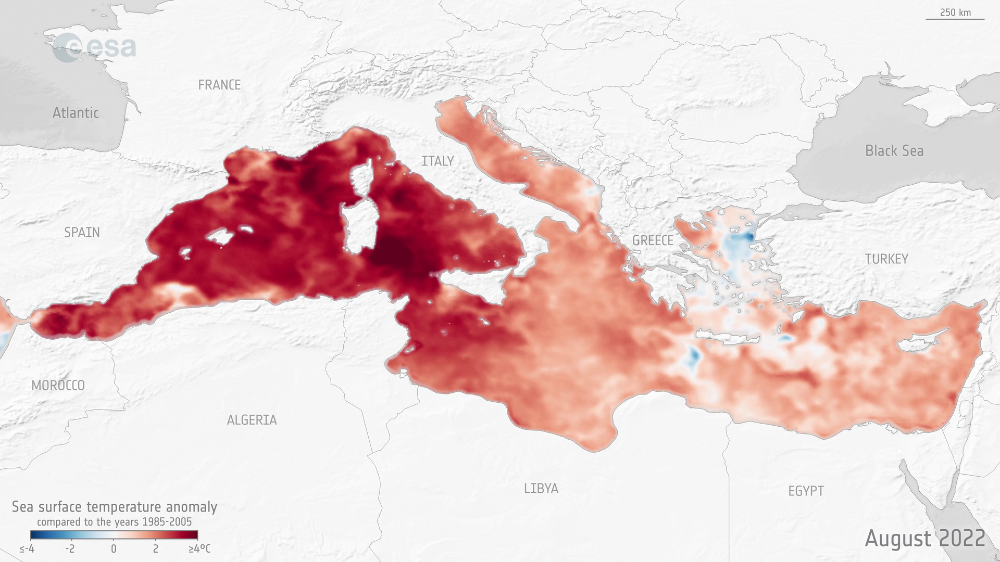
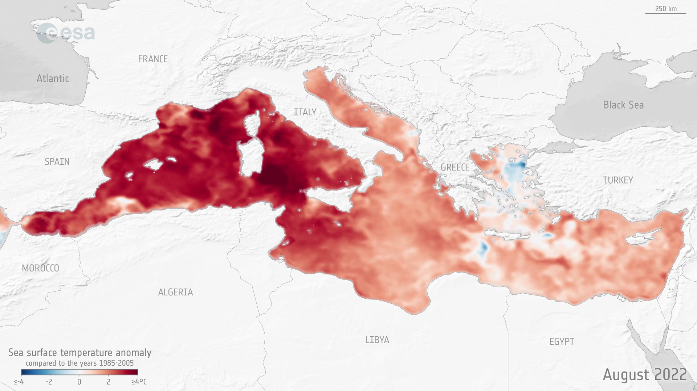

Mediterranean Sea hit by marine heatwave
Many parts of Europe saw record-breaking temperatures over the summer, but it wasn’t just the continental mainland that was affected: the Mediterranean Sea also suffered a major marine heatwave. An ESA-funded project, CAREHeat, detected one of the most intense Mediterranean marine heatwaves observed during the satellite era – with sea surface temperatures reaching 5°C higher than average.
Marine heatwaves are extreme rises in ocean temperature over an extended period of time. Their magnitude and frequency have harmful impacts on marine ecosystems, threaten marine biodiversity and negatively impact fisheries, aquaculture and tourism industries.
Higher water temperatures associated with marine heatwaves can also cause extreme weather events such as tropical storms and hurricanes and disrupt the water cycle, making floods, droughts and wildfires on land more likely.
As global ocean temperatures continue to rise, marine heatwaves have become more widespread and are only expected to increase in intensity, duration and frequency in the future owing to human-induced climate change.
Predicting marine heatwave occurrence and duration, as well as understanding their impacts on marine ecosystems, is essential and can help protect ecosystems and local communities.
CAREHeat (deteCtion and threAts of maRinE Heat waves), an ESA-funded project, aims to develop novel strategies to identify marine heatwaves, assess their status and trends and understand their impact on marine life.
The project, which began in March 2022, used near-real time sea surface temperature data available from the Copernicus Marine Service, and has been able to detect and monitor the Mediterranean marine heatwave that occurred this summer.
 

Access the video
The team found that this particularly extreme heatwave event started in the second half of April and stretched across the central and northwest Mediterranean Sea. In the area, sea surface temperature increases accelerated around 10 May and, in nearly 10 days, an abrupt change in temperature – from 16°C to 22°C – was observed.
In the Ligurian Sea – an arm of the Mediterranean – the maximum intensity of the heatwave was reached on 21 July, when the mean anomaly reached 5°C. As of 13 September, the heatwave in the Mediterranean is still present.
“We are still observing an averaged sea surface temperature anomaly of around 2°C, which intensified in the northwest Mediterranean where the anomaly is higher than 4°C,” commented Rosalia Santoleri, CAREHeat Project Coordinator.
The team will continue to monitor the evolution of this heatwave with the aim to understand how the temperature signal propagates below the surface, what are the drivers of this long-lasting extreme event and what impact it has on the Mediterranean marine ecosystem.
About CAREHeat
The CAREHeat consortium is led by the Institute of Marine Sciences of the Italian National Research Council (CNR-ISMAR) and includes the Italian National Agency for New Technologies, Energy and Sustainable Economic Development (ENEA), Collecte Localisation Satellites (CLS), the French Research Institute for Exploitation of the Sea (IFREMER), Mercator Ocean International (Moi) and +ATLANTIC CoLAB.
The team uses satellite observations, complemented with in situ measurements, biochemical ocean analyses and modelling as well as machine learning techniques, to study and identify marine heatwaves and determine their effects on marine ecosystems. Projects such as this demonstrate ESA’s responsibility to help European scientists understand our changing climate and the increasing frequency of extreme events.
Read more about CAREHeat by clicking here.